RPG Maker Fishing Mini-Game Step-by-Step Tutorial
Learn how to build a relaxing, expandable fishing system in RPG Maker using events, a random catch roll, and item rewards. It's not just about what you catch, it's how it happens! 🎣
All RPG Maker EnginesMid-level Tutorial~40 min

Good news: this system works with any version of RPG Maker. If you use MZ or MV, open the demo file and follow along. Using another engine? Just recreate the event commands shown below.
Download here!
What you'll learn today
With the splash of a lure, every cast feels special. Sometimes it's a fish, sometimes it's treasure, and other times… something you weren't meant to find! Here's what we'll cover:
1
Fish graphics & assets
How to use and license fish assets properly in your game, so you can swap the placeholders for your own art.
2
Step-by-step event setup
The casting check, the random catch roll, the catch outcomes, and the inventory reward, all built with events.
3
A handy scripting trick
A one-line script that shows the caught item's name instead of a number, so you never have to hardcode "Salmon" or "Mackerel" again.
4
Free ideas to expand the system
Seasonal fish, rod upgrades, line durability, daily limits, weather influence, ice fishing and more.
About the default fish graphics: the fish art in the demo is licensed placeholder content (from Creative Fabrica, Vecteezy and Freepik) and is meant to be replaced with your own. The RPG Maker scripting and event logic is free to use for community learning, but please license or replace the visual assets before publishing your game.
Before you start
1
If you have MZ/MV
Open the provided demo file for your engine. The key commands are an Autorun event in the top-left corner of the demo map, and a main Fishing Event next to the pier by the lake. For multiple maps, you can move the Fishing Event into Common Events instead of duplicating it, then trigger it with a switch or variable.
2
If you use a different engine
No problem, this guide covers everything step by step. Create a new event, place it in the top-left corner of the map to stay organized, and recreate the commands below in the Event Editor.
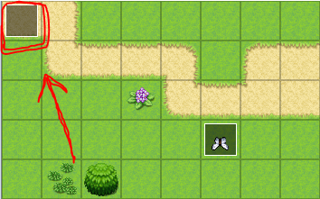
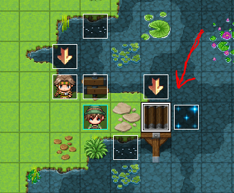
Tip: 💡 Demos for more engines are being added to the itch.io page, check there, or request one on Discord.
Part 1. Setting the hook
The system begins with a simple question: does the player even have a fishing rod?
1
Check for the Fishing Rod
Start the Fishing Event with a Conditional Branch:
If the player has Fishing Rod in inventory. This means the player can't fish without a rod, and by default their inventory is empty, which nudges them to go find one!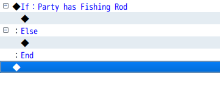
What happens on each path
✔️ Has the rod: turn the player to face right, play a water sound (to imitate casting), then start the random catch roll from 0 to 7.
❌ No rod: show a helpful on-screen message instead.
❌ No rod: show a helpful on-screen message instead.
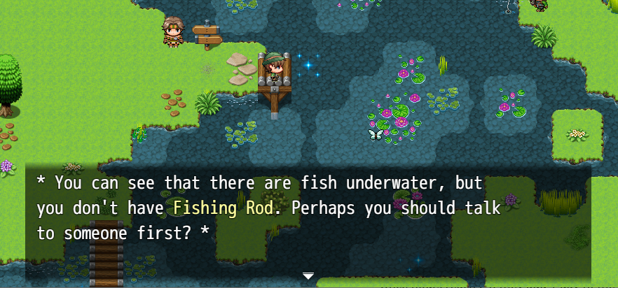
2
Make the water effect
Use animated water tiles from the
AnyaButterflySet.png set with Stepping Animation turned on, so the casting spot ripples.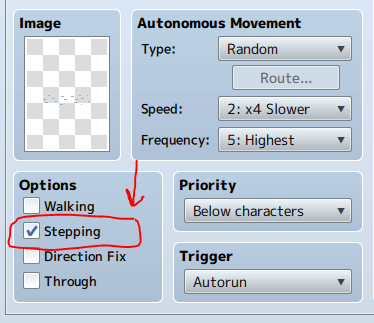
3
Add pointing arrows
Use the animated arrows from the same set with Stepping Animation on. Then add a
Wait for ~300 frames (about 5 seconds) and use a Switch to turn the arrow off.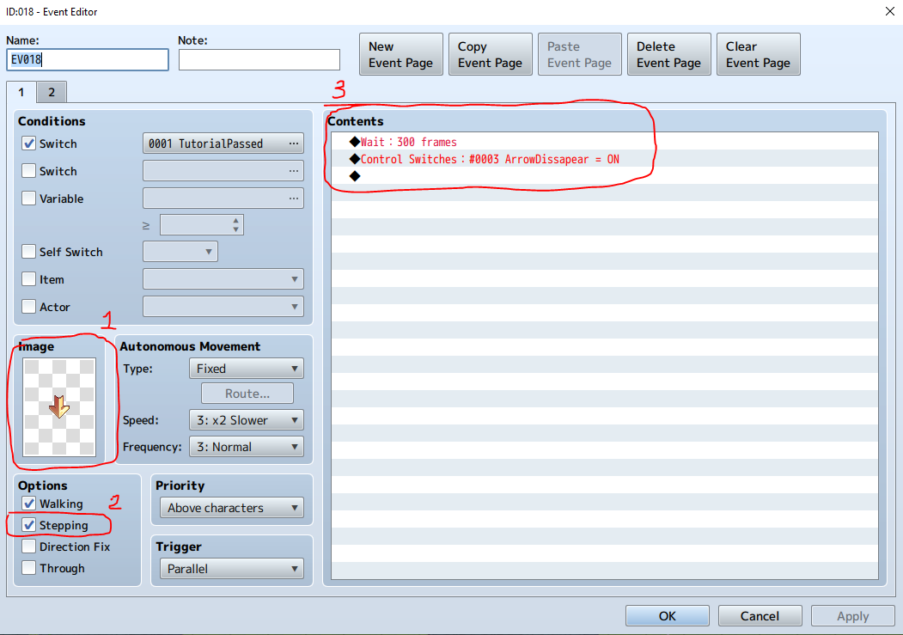
Part 2. Catch outcomes
The line
Caught Fish = Random(0..7) decides what's reeled in. Just like rolling dice, a series of nested If branches handles each possible result.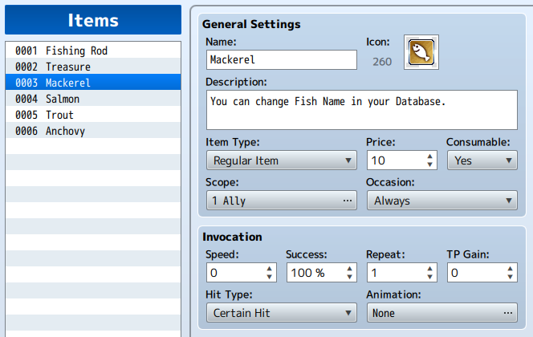
Each successful catch
• Plays a splash sound and a balloon icon animation
• Shows a picture animation, the fish slides in from offscreen, then disappears
• Confirms with text:
• Turns the
• Shows a picture animation, the fish slides in from offscreen, then disappears
• Confirms with text:
+1 \V[XXX] has been added to your inventory!• Turns the
PlayerFishingRight switch OFF to reset the walking graphic
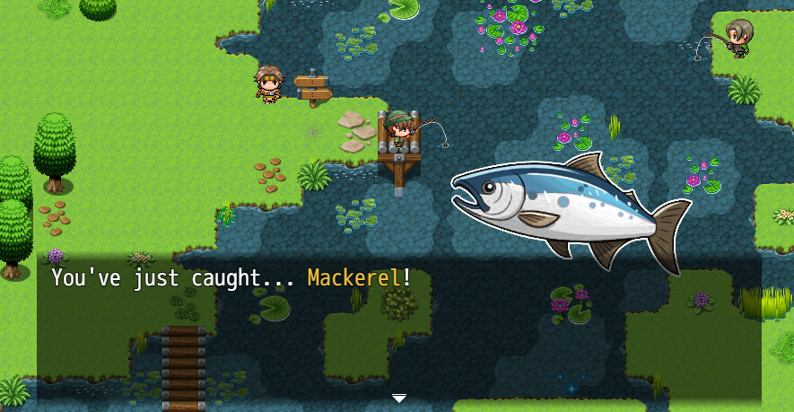
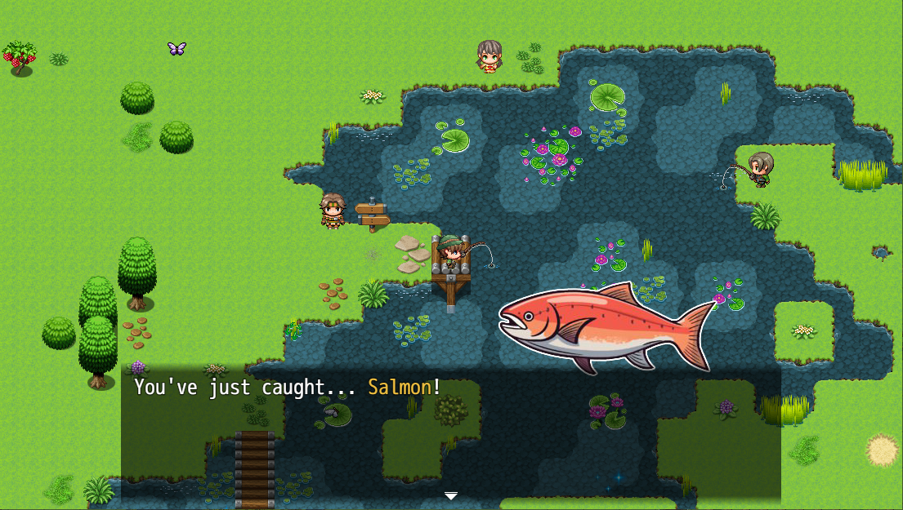
A handy script ☝️
We want the message to read "You've just caught… Salmon!". But
\V[3] would show the quantity of item ID 3, not its name, and hardcoding names like "Salmon" gets tedious to maintain. Here's a cleaner solution:◆Control Variables：#0003 Fish1 = $dataItems[003].name
This assigns the name of item ID 3 from the database to variable
\V[3]. Now "You've just caught…\V[3]!" displays "Salmon" automatically, and if you rename the item later, the message updates itself.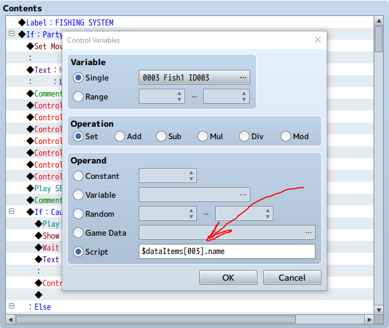
Part 3. Inventory & reset
After each completed reel, the fish (or boot, or treasure!) is added to the player's inventory. You can also keep a running tally for a later "fishing score".
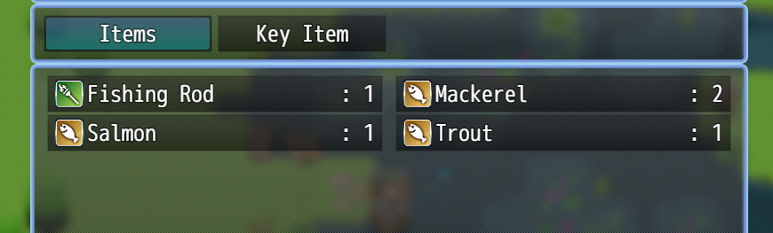
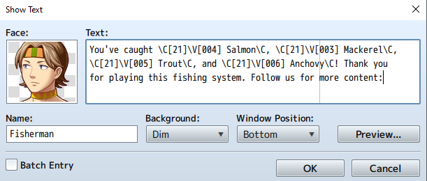
Note: in the score readout the variables show quantities rather than fish names, that's because we haven't applied the name script above to these particular lines. Use the same trick whenever you want names instead of numbers.
🚀 Where to go from here
You've built the whole core loop, a rod check, casting with water and arrow effects, a random catch roll, item rewards, and a handy script that shows fish names automatically. That's a complete, working fishing mini-game! 🎣
From here you can make it truly your own. Just below are free ideas to expand the system, rod upgrades, seasonal fish, weather, ice fishing and more. There's also a brand-new hand-drawn fish asset pack you're welcome to use (just credit Anya & Lolo), and the free Day & Night Cycle pairs perfectly for time-based catches.
🎁 Want the demos, assets and updates? Join the Anya & Lolo Club for free and the links land straight in your inbox 💌
How to expand the system 🧰
The core loop is done, here are free ideas to make it your own:
Quick-time catch challenge
Use a button-mash plugin to trigger a timed input ("Press [A] when the meter flashes!"). Success → rare catch; fail → lost bait.
Rod upgrades
Add a
RodTier variable: Basic Rod catches fish 1-4, Silver Rod adds 5-6, Golden Rod unlocks Treasure. Condition the catch outcomes on the tier.Daily fishing limits
Use a
FishQuota variable (say, 10), decrease it per cast, and let higher-tier rods raise the quota. Adds pacing and makes upgrades meaningful.Skill progression
Track total catches in a
FishingSkillLevel variable, then unlock better catch rates, rare fish, or new areas as it rises.Seasonal / time-based fish
Make some fish only catchable at certain times, Anchovy in the morning, a Moon Snapper between 2-3 AM. Pairs perfectly with the Day & Night Cycle.
Line durability / break risk
Add a
LineStrength variable; heavy or rare fish run a chance-based durability check. Big catches feel riskier and more rewarding.Weather influence
Rain boosts activity, fog weakens results, thunderstorms may block fishing… or unlock rare pools!
Frozen lakes & ice fishing
In winter, make the player "cut a hole" in the ice and fish within a time limit before freezing, catch exclusive frostfish or glacial relics!
🎁 Free extras: Day & Night Cycle
The free Day & Night Cycle pairs beautifully with fishing, run a natural time cycle with a clean time display, global time across maps, AM/PM formats and a pause-time option for cutscenes.